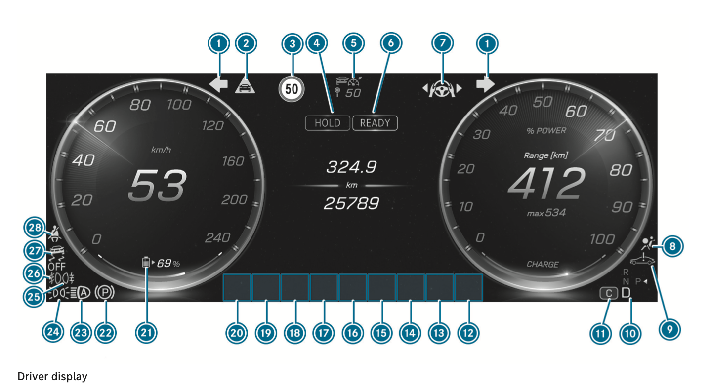

Mercedes-Benz CLA 250 e (EV+) Owner's Guide
Mercedes-Benz CLA 250 e (EV+) Owner's Guide
Bottom Line Up Front: The Mercedes-Benz CLA 250 e combines dynamic driving with electric efficiency. Mastering the DYNAMIC SELECT drive programs, MBUX Voice Assistant, and dashboard indicators will significantly improve your driving experience and electric range.
DYNAMIC SELECT Drive Programs
The DYNAMIC SELECT system lets you quickly adjust your vehicle's Drive, Steering, and ESP® characteristics to suit your needs.
- [C] COMFORT: Best for everyday driving. Offers a balanced setup between traction, stability, efficiency, and performance on all carriageway conditions.
- [S] SPORT: Designed for dynamic driving with maximum power availability and a sporty setup. Only use on dry, good carriageway surfaces with clear visibility.
- [E] ECO: Maximizes efficiency and electric range. Features Navigation with Electric Intelligence, which displays recommended maximum speeds to help you reach the next charging station. It also includes speed-dependent acceleration limitations (which can be overridden with kick-down).
- [I*] INDIVIDUAL: Customize your own settings for Drive, Steering, and ESP®.
What does ECO mode do in the CLA 250 e?
ECO mode optimizes the vehicle for maximum range. It limits acceleration and uses Electric Intelligence during navigation to guide your speed so you can reach your next charging stop.
Dashboard Indicators and Warning Lamps
Understanding your driver display ensures safety and optimal performance.

(Mercedes-Benz CLA 250 driver display layout)
Dashboard Indicators (Full List)
| No. | Indicator / Warning Lamp | Page |
|---|---|---|
| 1 | Turn signal light | 236 |
| 2 | Distance warning | 735 |
| 3 | Traffic Sign Assist | 336 |
| 4 | Break Hold | 336 |
| 5 | Distance Assist DISTRONIC | 320 |
| 6 | Car Ready | 336 |
| 7 | Steering Assist | 327 |
| 8 | Restraint system | 730 |
| 9 | System fault | 732 |
| 10 | Transmission position | 232 |
| 11 | Drive program | 232 |
| 12-20 | Dynamic display sections for: - ATTENTION ASSIST - Brake Assist - ABS - Tyre pressure monitoring system - Trailer hitch - Power steering (red) - Power steering (yellow) - Occupant presence reminder (white) - Occupant presence reminder (yellow) - Mercedes-Benz emergency call system - Reduced power - Electrical fault - Brakes (red) - Brakes (yellow) - Electric parking brake (yellow) - Rear window wiper |
735 735 735 739 732 732 730 739 732 732 733 733 733 236 |
| 19 | Charge level display | 333 |
| 20 | Electric parking brake (red) | 733 |
| 21 | Adaptive Highbeam Assist | 239 |
| 22 | Standing lights | 235 |
| - | Low beam | 235 |
| 23 | Rear fog lights | 235 |
| 24 | ESP® OFF | 735 |
| - | ESP® | 735 |
| 25 | Seat belt | 730 |
MBUX Voice Assistant ("Hey Mercedes")
Control multimedia, navigation, and vehicle settings hands-free using colloquial language. Just say "Hey Mercedes, ..."
Key Voice Commands
- Navigation: "Where is the nearest charging station?", "Navigate me to Warsaw and avoid toll roads."
- Vehicle Functions: "Switch the seat heating to level 2," "I would like to set the ambient light to blue." (Actions apply to the seat closest to the speaker).
- Information: "How do I charge the vehicle?", "What do I need ESP for?"
- General Knowledge: "Is it raining at my destination?", "How many Swiss franks make 25 euros?"
Pro Tip: You can customize the assistant by navigating to Settings > Virtual assistant > Customise assistant on your display or via the Notification Centre.
FAQ
How do I find the nearest EV charging station?
Simply activate the MBUX Voice Assistant and say, "Hey Mercedes, where is the nearest charging station?" The system will route you there dynamically.
Full Manual
For more detailed information, please refer to the Full Mercedes-Benz CLA Owner's Manual.
คู่มือผู้ใช้ Mercedes-Benz CLA 250 e (EV+)
สรุปเนื้อหาสำคัญ (Bottom Line Up Front): Mercedes-Benz CLA 250 e ผสมผสานการขับขี่แบบ dynamic เข้ากับประสิทธิภาพของระบบไฟฟ้า การทำความเข้าใจระบบ DYNAMIC SELECT, MBUX Voice Assistant และไฟสัญญาณเตือนบนหน้าปัด จะช่วยยกระดับประสบการณ์การขับขี่และระยะทางที่วิ่งได้ด้วยไฟฟ้าอย่างมาก
โหมดการขับขี่ DYNAMIC SELECT
ระบบ DYNAMIC SELECT ช่วยให้คุณสามารถปรับตั้งค่า Drive, Steering และ ESP® ของรถได้อย่างรวดเร็วตามความต้องการของคุณ
- [C] COMFORT: เหมาะสำหรับการขับขี่ในชีวิตประจำวัน ให้ความสมดุลระหว่าง traction, stability, ประสิทธิภาพ และสมรรถนะในทุกสภาพถนน
- [S] SPORT: ออกแบบมาเพื่อการขับขี่แบบ dynamic ที่ใช้ maximum power และการปรับตั้งแบบสปอร์ต ควรใช้เฉพาะบนถนนที่แห้ง สภาพดี และมีทัศนวิสัยชัดเจนเท่านั้น
- [E] ECO: เพิ่มประสิทธิภาพและระยะทางด้วยระบบไฟฟ้าสูงสุด มีฟีเจอร์ Navigation with Electric Intelligence ซึ่งจะแสดงความเร็วสูงสุดที่แนะนำเพื่อช่วยให้คุณไปถึง charging station ถัดไปได้ รวมไปถึงการจำกัด acceleration ตามความเร็ว (ซึ่งสามารถยกเลิกได้ด้วยการ kick-down)
- [I*] INDIVIDUAL: ปรับแต่งการตั้งค่า Drive, Steering และ ESP® ของคุณเอง
ECO mode ทำงานอย่างไรใน CLA 250 e?
ECO mode จะปรับตั้งรถยนต์เพื่อให้ได้ระยะทางวิ่งสูงสุด โดยจำกัด acceleration และใช้ Electric Intelligence ร่วมกับ navigation เพื่อแนะนำความเร็วที่เหมาะสมในการวิ่งไปยัง charging station ถัดไป
ไฟสัญญาณเตือนและไฟแสดงสถานะ (Dashboard Indicators)
การเข้าใจ driver display ของคุณจะช่วยให้เกิดความปลอดภัยและประสิทธิภาพสูงสุด
(หน้าจอแสดงผลของ Mercedes-Benz CLA 250)
รายการไฟสัญญาณเตือนทั้งหมด (Full List)
| หมายเลข | ไฟสัญญาณเตือน / ไฟแจ้งเตือน | หน้า |
|---|---|---|
| 1 | Turn signal light | 236 |
| 2 | Distance warning | 735 |
| 3 | Traffic Sign Assist | 336 |
| 4 | Break Hold | 336 |
| 5 | Distance Assist DISTRONIC | 320 |
| 6 | Car Ready | 336 |
| 7 | Steering Assist | 327 |
| 8 | Restraint system | 730 |
| 9 | System fault | 732 |
| 10 | Transmission position | 232 |
| 11 | Drive program | 232 |
| 12-20 | Dynamic display sections สำหรับ: - ATTENTION ASSIST - Brake Assist - ABS - Tyre pressure monitoring system - Trailer hitch - Power steering (สีแดง) - Power steering (สีเหลือง) - Occupant presence reminder (สีขาว) - Occupant presence reminder (สีเหลือง) - Mercedes-Benz emergency call system - Reduced power - Electrical fault - Brakes (สีแดง) - Brakes (สีเหลือง) - Electric parking brake (สีเหลือง) - Rear window wiper |
735 735 735 739 732 732 730 739 732 732 733 733 733 236 |
| 19 | Charge level display | 333 |
| 20 | Electric parking brake (สีแดง) | 733 |
| 21 | Adaptive Highbeam Assist | 239 |
| 22 | Standing lights | 235 |
| - | Low beam | 235 |
| 23 | Rear fog lights | 235 |
| 24 | ESP® OFF | 735 |
| - | ESP® | 735 |
| 25 | Seat belt | 730 |
MBUX Voice Assistant ("Hey Mercedes")
ควบคุม multimedia, navigation และ vehicle settings แบบ hands-free ด้วยภาษาพูดทั่วไป เพียงพูดว่า "Hey Mercedes, ..."
คำสั่งเสียงที่สำคัญ (Voice Commands)
- Navigation: "Where is the nearest charging station?", "Navigate me to Warsaw and avoid toll roads."
- Vehicle Functions: "Switch the seat heating to level 2," "I would like to set the ambient light to blue." (การทำงานจะมีผลกับเบาะที่อยู่ใกล้ผู้พูดที่สุด)
- Information: "How do I charge the vehicle?", "What do I need ESP for?"
- General Knowledge: "Is it raining at my destination?", "How many Swiss franks make 25 euros?"
Pro Tip: คุณสามารถปรับแต่ง assistant ได้โดยไปที่ Settings > Virtual assistant > Customise assistant บนหน้าจอของคุณ หรือผ่านทาง Notification Centre
FAQ
ฉันจะหา charging station ที่ใกล้ที่สุดได้อย่างไร?
เพียงเปิดใช้งาน MBUX Voice Assistant แล้วพูดว่า "Hey Mercedes, where is the nearest charging station?" ระบบจะนำทางคุณไปที่นั่นแบบ dynamically
คู่มือฉบับเต็ม (Full Manual)
สำหรับข้อมูลเพิ่มเติม โปรดอ้างอิงจาก คู่มือผู้ใช้ Mercedes-Benz CLA ฉบับเต็ม
Mercedes-Benz CLA 250 e (EV+) 用户指南
核心结论 (Bottom Line Up Front): Mercedes-Benz CLA 250 e 结合了 dynamic 驾驶体验与电力驱动的高效能。掌握 DYNAMIC SELECT、MBUX Voice Assistant 以及仪表盘指示灯，将显著提升您的驾驶体验和纯电续航里程。
DYNAMIC SELECT 驾驶模式
DYNAMIC SELECT 系统允许您根据自身需求快速调整车辆的 Drive、Steering 和 ESP® 特性。
- [C] COMFORT: 适合日常驾驶。在各种路况下提供 traction、stability、效能与性能的最佳平衡。
- [S] SPORT: 专为 dynamic 驾驶设计，提供 maximum power 并具有运动化调校。仅适用于路况良好、路面干燥且视野清晰的情况。
- [E] ECO: 最大化效能与纯电续航。具备 Navigation with Electric Intelligence 功能，可显示建议的最高车速，帮助您到达下一个 charging station。还包含与速度相关的 acceleration 限制（可通过 kick-down 取消）。
- [I*] INDIVIDUAL: 允许对 Drive、Steering 和 ESP® 进行独立自定义设置。
CLA 250 e 中的 ECO mode 有什么作用？
ECO mode 通过优化车辆来最大化续航里程。它限制了 acceleration，并在 navigation 过程中使用 Electric Intelligence 引导您的车速，确保您顺利到达下一个 charging station。
仪表盘指示灯与警告灯 (Dashboard Indicators)
了解您的 driver display 可确保行车安全并实现最佳性能。
(Mercedes-Benz CLA 250 driver display 布局)
仪表盘指示灯完整列表 (Full List)
| 编号 | 指示灯 / 警告灯 | 页码 |
|---|---|---|
| 1 | Turn signal light | 236 |
| 2 | Distance warning | 735 |
| 3 | Traffic Sign Assist | 336 |
| 4 | Break Hold | 336 |
| 5 | Distance Assist DISTRONIC | 320 |
| 6 | Car Ready | 336 |
| 7 | Steering Assist | 327 |
| 8 | Restraint system | 730 |
| 9 | System fault | 732 |
| 10 | Transmission position | 232 |
| 11 | Drive program | 232 |
| 12-20 | Dynamic display sections 用于: - ATTENTION ASSIST - Brake Assist - ABS - Tyre pressure monitoring system - Trailer hitch - Power steering (红色) - Power steering (黄色) - Occupant presence reminder (白色) - Occupant presence reminder (黄色) - Mercedes-Benz emergency call system - Reduced power - Electrical fault - Brakes (红色) - Brakes (黄色) - Electric parking brake (黄色) - Rear window wiper |
735 735 735 739 732 732 730 739 732 732 733 733 733 236 |
| 19 | Charge level display | 333 |
| 20 | Electric parking brake (红色) | 733 |
| 21 | Adaptive Highbeam Assist | 239 |
| 22 | Standing lights | 235 |
| - | Low beam | 235 |
| 23 | Rear fog lights | 235 |
| 24 | ESP® OFF | 735 |
| - | ESP® | 735 |
| 25 | Seat belt | 730 |
MBUX Voice Assistant ("Hey Mercedes")
使用日常口语即可 hands-free 控制 multimedia、navigation 和 vehicle settings。只需说 "Hey Mercedes, ..."
关键语音指令 (Voice Commands)
- Navigation: "Where is the nearest charging station?", "Navigate me to Warsaw and avoid toll roads."
- Vehicle Functions: "Switch the seat heating to level 2," "I would like to set the ambient light to blue." (操作将应用于距离说话者最近的座椅)。
- Information: "How do I charge the vehicle?", "What do I need ESP for?"
- General Knowledge: "Is it raining at my destination?", "How many Swiss franks make 25 euros?"
Pro Tip: 您可以通过在显示屏上导航到 Settings > Virtual assistant > Customise assistant 或通过 Notification Centre 来自定义该 assistant。
FAQ
如何找到最近的 EV charging station？
只需激活 MBUX Voice Assistant 并说："Hey Mercedes, where is the nearest charging station?"，系统便会 dynamically 为您规划路线。
完整手册 (Full Manual)
有关更多详细信息，请参阅 完整的 Mercedes-Benz CLA 用户手册。
Mercedes-Benz CLA 250 e (EV+) オーナーズガイド
要約 (Bottom Line Up Front): Mercedes-Benz CLA 250 eは、dynamicな走りと電気自動車の効率性を融合させています。DYNAMIC SELECT、MBUX Voice Assistant、およびダッシュボードの指示灯をマスターすることで、ドライビング体験と航続距離が飛躍的に向上します。
DYNAMIC SELECT ドライブプログラム
DYNAMIC SELECT システムにより、状況に合わせて車両の Drive、Steering、および ESP® を素早く調整できます。
- [C] COMFORT: 日常の運転に最適です。あらゆる路面状況において、traction、stability、効率性、パフォーマンスの最適なバランスを提供します。
- [S] SPORT: maximum power を引き出す dynamic な走りとスポーティな設定のために設計されています。視界が良好で乾燥した路面でのみ使用してください。
- [E] ECO: 効率性と航続距離を最大化します。Navigation with Electric Intelligence 機能を備えており、次の charging station に到達するための推奨最高速度を表示します。また、速度に応じた acceleration 制限も含まれます（kick-down で解除可能）。
- [I*] INDIVIDUAL: Drive、Steering、および ESP® の個別設定をカスタマイズできます。
CLA 250 e の ECO mode はどのような機能ですか？
ECO mode は航続距離を最大化するように車両を最適化します。acceleration を制限し、navigation 中に Electric Intelligence を使用して速度を管理し、次の charging station まで到達できるようにサポートします。
ダッシュボードの指示灯と警告灯 (Dashboard Indicators)
driver display を理解することで、安全性と最適なパフォーマンスが確保されます。
(Mercedes-Benz CLA 250 driver display のレイアウト)
ダッシュボード・インジケーター一覧 (Full List)
| 番号 | 指示灯 / 警告灯 | ページ |
|---|---|---|
| 1 | Turn signal light | 236 |
| 2 | Distance warning | 735 |
| 3 | Traffic Sign Assist | 336 |
| 4 | Break Hold | 336 |
| 5 | Distance Assist DISTRONIC | 320 |
| 6 | Car Ready | 336 |
| 7 | Steering Assist | 327 |
| 8 | Restraint system | 730 |
| 9 | System fault | 732 |
| 10 | Transmission position | 232 |
| 11 | Drive program | 232 |
| 12-20 | 以下の Dynamic display sections: - ATTENTION ASSIST - Brake Assist - ABS - Tyre pressure monitoring system - Trailer hitch - Power steering (赤) - Power steering (黄) - Occupant presence reminder (白) - Occupant presence reminder (黄) - Mercedes-Benz emergency call system - Reduced power - Electrical fault - Brakes (赤) - Brakes (黄) - Electric parking brake (黄) - Rear window wiper |
735 735 735 739 732 732 730 739 732 732 733 733 733 236 |
| 19 | Charge level display | 333 |
| 20 | Electric parking brake (赤) | 733 |
| 21 | Adaptive Highbeam Assist | 239 |
| 22 | Standing lights | 235 |
| - | Low beam | 235 |
| 23 | Rear fog lights | 235 |
| 24 | ESP® OFF | 735 |
| - | ESP® | 735 |
| 25 | Seat belt | 730 |
MBUX Voice Assistant ("Hey Mercedes")
日常会話を使って、multimedia、navigation、vehicle settings を hands-free で操作できます。「Hey Mercedes, ...」と話しかけるだけです。
主要な音声コマンド (Voice Commands)
- Navigation: "Where is the nearest charging station?", "Navigate me to Warsaw and avoid toll roads."
- Vehicle Functions: "Switch the seat heating to level 2," "I would like to set the ambient light to blue."（指示を出した人に最も近いシートに適用されます）。
- Information: "How do I charge the vehicle?", "What do I need ESP for?"
- General Knowledge: "Is it raining at my destination?", "How many Swiss franks make 25 euros?"
Pro Tip: ディスプレイの Settings > Virtual assistant > Customise assistant から、または Notification Centre を通じて assistant をカスタマイズできます。
FAQ
最寄りの EV charging station はどうやって見つけますか？
MBUX Voice Assistant を起動し、「Hey Mercedes, where is the nearest charging station?」と言うだけです。システムが dynamically にルートを案内します。
完全版マニュアル (Full Manual)
詳細については、Mercedes-Benz CLA オーナーズマニュアル完全版をご参照ください。
Mercedes-Benz CLA 250 e (EV+) Benutzerhandbuch
Fazit vorab (Bottom Line Up Front): Der Mercedes-Benz CLA 250 e kombiniert dynamic Fahren mit elektrischer Effizienz. Wenn Sie die DYNAMIC SELECT Fahrprogramme, den MBUX Voice Assistant und die Dashboard Indicators beherrschen, verbessern Sie Ihr Fahrerlebnis und Ihre elektrische Reichweite erheblich.
DYNAMIC SELECT Fahrprogramme
Das DYNAMIC SELECT System ermöglicht es Ihnen, die Drive-, Steering- und ESP®-Eigenschaften Ihres Fahrzeugs schnell an Ihre Bedürfnisse anzupassen.
- [C] COMFORT: Ideal für das tägliche Fahren. Bietet eine ausgewogene Balance zwischen traction, stability, Effizienz und Leistung auf allen Fahrbahnen.
- [S] SPORT: Entwickelt für dynamic Fahren mit maximum power und sportlicher Abstimmung. Nur auf trockenen, gut ausgebauten Straßen mit klarer Sicht verwenden.
- [E] ECO: Maximiert die Effizienz und die elektrische Reichweite. Bietet Navigation with Electric Intelligence, die die empfohlene Höchstgeschwindigkeit anzeigt, um die nächste charging station zu erreichen. Beinhaltet auch eine geschwindigkeitsabhängige acceleration Begrenzung (kann durch kick-down übersteuert werden).
- [I*] INDIVIDUAL: Passen Sie Ihre eigenen Einstellungen für Drive, Steering und ESP® an.
Was bewirkt der ECO mode im CLA 250 e?
Der ECO mode optimiert das Fahrzeug für maximale Reichweite. Er begrenzt die acceleration und nutzt Electric Intelligence während der navigation, um Ihre Geschwindigkeit zu steuern, damit Sie den nächsten Ladestopp erreichen.
Anzeige- und Warnleuchten (Dashboard Indicators)
Das Verständnis Ihres driver display gewährleistet Sicherheit und optimale Leistung.
(Layout des Mercedes-Benz CLA 250 driver display)
Vollständige Liste der Anzeigen (Full List)
| Nr. | Anzeige- / Warnleuchte | Seite |
|---|---|---|
| 1 | Turn signal light | 236 |
| 2 | Distance warning | 735 |
| 3 | Traffic Sign Assist | 336 |
| 4 | Break Hold | 336 |
| 5 | Distance Assist DISTRONIC | 320 |
| 6 | Car Ready | 336 |
| 7 | Steering Assist | 327 |
| 8 | Restraint system | 730 |
| 9 | System fault | 732 |
| 10 | Transmission position | 232 |
| 11 | Drive program | 232 |
| 12-20 | Dynamic display sections für: - ATTENTION ASSIST - Brake Assist - ABS - Tyre pressure monitoring system - Trailer hitch - Power steering (rot) - Power steering (gelb) - Occupant presence reminder (weiß) - Occupant presence reminder (gelb) - Mercedes-Benz emergency call system - Reduced power - Electrical fault - Brakes (rot) - Brakes (gelb) - Electric parking brake (gelb) - Rear window wiper |
735 735 735 739 732 732 730 739 732 732 733 733 733 236 |
| 19 | Charge level display | 333 |
| 20 | Electric parking brake (rot) | 733 |
| 21 | Adaptive Highbeam Assist | 239 |
| 22 | Standing lights | 235 |
| - | Low beam | 235 |
| 23 | Rear fog lights | 235 |
| 24 | ESP® OFF | 735 |
| - | ESP® | 735 |
| 25 | Seat belt | 730 |
MBUX Voice Assistant ("Hey Mercedes")
Steuern Sie multimedia, navigation und vehicle settings hands-free in alltäglicher Sprache. Sagen Sie einfach "Hey Mercedes, ..."
Wichtige Sprachbefehle (Voice Commands)
- Navigation: "Where is the nearest charging station?", "Navigate me to Warsaw and avoid toll roads."
- Vehicle Functions: "Switch the seat heating to level 2," "I would like to set the ambient light to blue." (Die Aktion wird auf dem Sitz ausgeführt, der dem Sprecher am nächsten ist).
- Information: "How do I charge the vehicle?", "What do I need ESP for?"
- General Knowledge: "Is it raining at my destination?", "How many Swiss franks make 25 euros?"
Pro Tip: Sie können den assistant anpassen, indem Sie auf Ihrem Display zu Settings > Virtual assistant > Customise assistant navigieren oder das Notification Centre nutzen.
FAQ
Wie finde ich die nächste EV charging station?
Aktivieren Sie einfach den MBUX Voice Assistant und sagen Sie: "Hey Mercedes, where is the nearest charging station?" Das System leitet Sie dynamically dorthin.
Vollständiges Handbuch (Full Manual)
Für detailliertere Informationen lesen Sie bitte das vollständige Mercedes-Benz CLA Benutzerhandbuch.